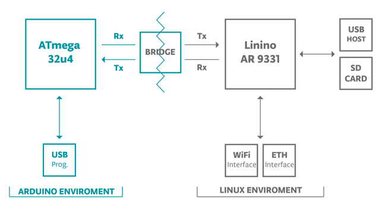

Scarica il documento PDF
Arduino Yun è una scheda basata sul microcontrollore ATmega32u4 e il microprocessore Atheros AR9331, che supporta la distrubuzione Linux OpenWRT-Yun.
La parte Linux(AR9331) gestisce:
- La connessione Ethernet
- La comunicazione WiFi
- Una porta USB-Host
- Lo slot Micro-SD

La parte Arduino(ATmega32u4) possiede:
- Comunicazione seriale: pin 0(RX) e 1(TX), utilizzati anche per comunicare con la parte Linux(AR9331), per la console a linea di comando.
- Comunicazione I2C: pin 2(SDA) e 3(SCL)
- Interrupt:
- Pin 3(interrupt 0)
- Pin 2(interrupt 1)
- Pin 0(interrupt 2), collegato anche con la parte Linux come seriale RX.
- Pin 1(interrupt 3), collegato anche con la parte Linux come seriale TX.
- Pin 7(interrupt 4), collegato anche con la parte Linux come segnale di handshake.
- PWM: Pin 3, 5, 6, 9, 10, 11 e 13
- SPI: connettore ICSP(non sui piedini I/O come in altri Arduini), collegato anche con la parte Linux sempre come SPI.
- I/O Analogici: A0-A5, A6-A11(rispettivamente sui pin 4, 6, 8, 9, 10 e 12)
Clicca sull'immagine per ingrandirla

La comunicazione tra la parte Linux e la parte Arduino avviene tramite il bus seriale situato sui pin 0(RX) e 1(TX). Questo bus viene usato per inviare comandi alla parte Linux.

Programmazione
Ci sono 2 modi per programmare l’ATmega:
- Via microUSB(come un normale Arduino):
- Selezionare Strumenti-->programmatore-->“AVRISP mkII”.
- Caricare lo sketch.
- Via Wi-Fi:
- Connettere il proprio PC alla rete di ArduinoYUN.
- selezionare Strumenti-->programmatore-->“Parallel programmer”
- Caricare lo sketch
Problemi
Istruzioni pesanti
Nell’uso delle varie librerie legate alla comunicazione tra la parte Arduino e la parte Linux, come la librerie Console, Process e FileIO, le istruzioni pesano molto.
Ad esempio per inviare un semplice comando alla console di Linux:
p.runShellCommand("/usr/bin/pretty-wifi-info.lua | grep Signal");
questa istruzione occupa circa 1.5kB sui 28.6kB della memoria di programma utilizzabili.
Addirittura alcuni sketch di esempio forniti con l’IDE Arduino occupano il 50-60% della memoria di programma.
Link utili
http://arduino.cc/en/Main/ArduinoBoardYun?from=Products.ArduinoYUN
http://arduino.cc/en/Guide/ArduinoYun